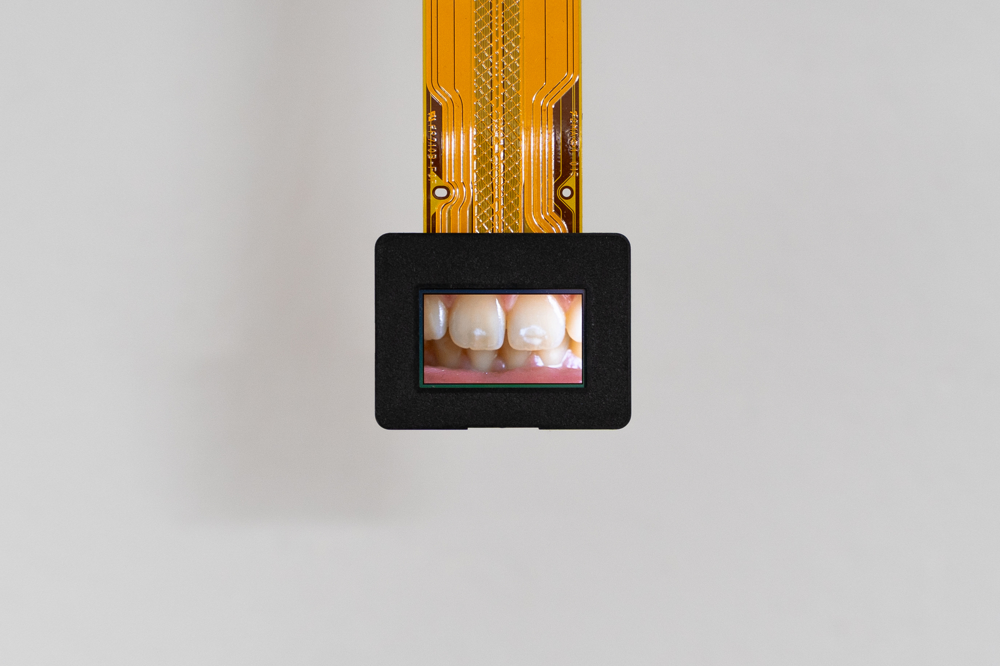

I Often Dream Of My Teeth Falling Out
2024
Micro-OLED display, computer, cables, PLA, bolts, nuts
20 x 20 cm
I Often Dream Of My Teeth Falling Out (2024) is a multimedia sculpture consisting of a small computer and a 1080p, 1.8cm micro-OLED display, which shows a high definition video of my front teeth. Due to the extremely high pixel density of the display, as well as its unusually small size, the image appears almost life-like.

